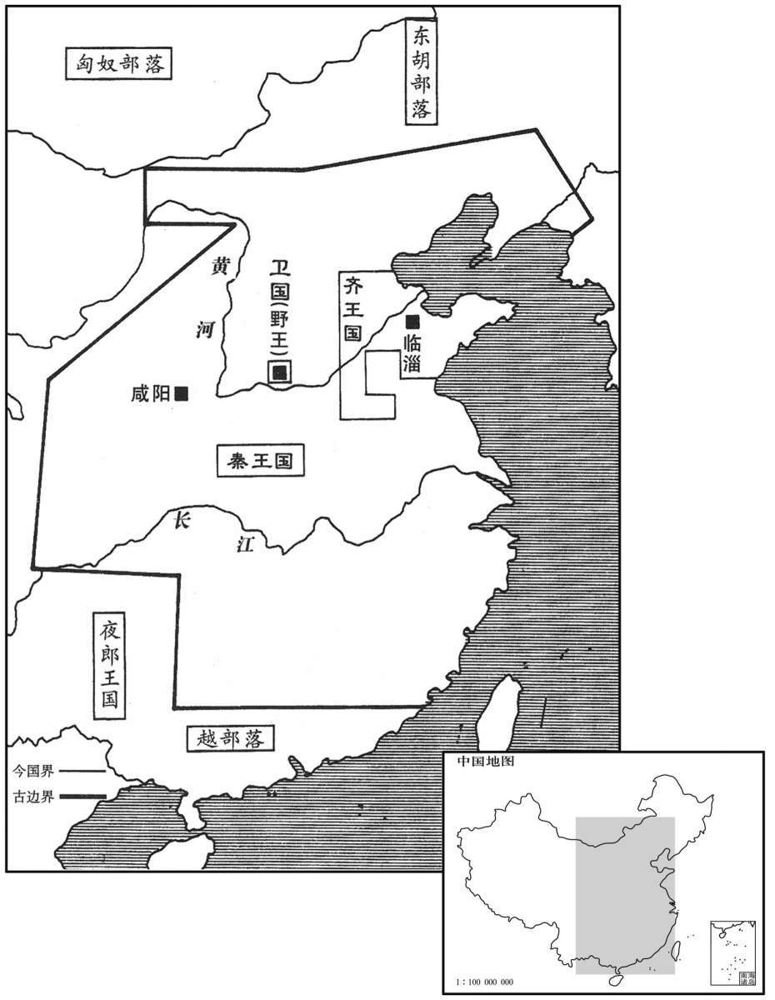

公元前222年资治通鉴：本年记事、原文与白话对照
按原书编年位置阅读；追叙和史论不等于本年发生的事件。白话采用所据译本，缺译不以生成译文补齐。
卷7 · 本年记事
公元前222年 · 始皇帝在位第25年
二十五年〔（己卯、前二二二）〕
本年事件索引（现代整理）

本年形势与背景参考图
史家评论 · 原文及其白话
臣光曰：燕丹不胜一朝之忿以犯虎狼之秦，〔胜，音升。〕轻虑浅谋，挑怨速祸，使召公之庙不祀忽诸，〔忽诸，言忽然而亡也。〕罪孰大焉！而论者或谓之贤，岂不过哉！
臣司马光曰：燕太子丹不能忍受一时的激忿而去冒犯如狼似虎的秦国，虑崐事轻率，谋划浅薄，以致挑起怨恨，加速了灭亡之祸，使供奉燕国始祖召公的宗庙祭祀忽然中断，罪过没有比这个更大的了！而评论的人有的还把太子丹说成是德才兼备的人，这难道不是太过分了吗！
本段人物：燕太子丹
夫为国家者，任官以才，立政以礼，怀民以仁，交邻以信；是以官得其人，政得其节，百姓怀其德，四邻亲其义。夫如是，则国家安如盘石，炽如焱火，〔炽，尺志翻。焱，弋赡翻。〕触之者碎，犯之者焦，虽有强暴之国，尚何足畏哉！丹释此不为，顾以万乘之国，决匹夫之怒，逞盗贼之谋，功隳身戮，社稷为墟，不亦悲哉！
对于治理国家的人来说，任命有才能的人为官，按照礼制确立政策法规，以仁爱之心安抚百姓，凭借信义结交邻邦。如此，官员由有才干的人担任，政事得到礼教的节制，百姓人心归向他的德行，四邻亲近友善他的恪守信义。这样，国家则会安如磐石，炽如火焰，触犯它的一定被撞得粉碎，挨着它的一定被烧得焦头烂额。似此，即便是有强暴的敌国存在，又有什么值得畏惧的呢！太子丹放弃这条路不走，反而用万辆战车的大国去排解个人的私愤、炫耀盗贼式的谋略，结果是功名被毁坏、身命遭杀戮，江山社稷化作废墟，这难道不是很令人悲痛的事吗！
夫其膝行、蒲伏，非恭也；〔蒲，蓬逋翻，手行也。伏，凫墨翻，伏地也。〕复言、重诺、非信也；〔复言，谓言必信而可复也。重诺，重然诺也。〕糜金、散玉，非惠也；刎首、决腹，非勇也。要之，谋不远而动不义，其楚白公胜之流乎！〔白公胜欲报其父雠，不胜其忿，以及其叔父，事见左传。〕
跪着前进，伏地而行，并不表示恭敬；言必行，重承诺，并不表示守信义；过度耗费金钱，散发玉器，并不表示施恩惠；自割颈部，自剖肚腹，并不表示勇敢。这种种问题的关键在于，只顾眼前利益不能深谋远虑而行动不合乎礼义，似此不过是楚国的为复仇而丧生的白公胜之流罢了！
本段人物：燕太子丹
荆轲怀其豢养之私，不顾七族，〔汉邹阳曰：荆轲湛七族。应劭曰：荆轲为燕刺秦王，其族坐之湛没。〕欲以尺八匕首强燕而弱秦，不亦愚乎！故扬子论之，以要离为蛛蝥之靡，聂政为壮士之靡，〔要离，吴人，为吴王阖闾刺庆忌。言其力不足，譬如蜘蛛之螫毒于人而靡死耳。靡，披靡而死也。尔雅疏：鼅鼄，即鼄蝥。方言：自关以西，秦、晋之间谓之鼄蝥，赵、魏之间谓之鼅。鼄，音朱；蝥，音矛。靡，温公扬子注，音如字。康美为切，谓糜烂也。余谓康音义俱非。聂政事见一卷安王五年。〕荆轲为刺客之靡，皆不可谓之义。又曰：“荆轲，君子盗诸。”〔吴秘曰：荆轲，以君子之道类之则盗尔。〕善哉！
荆轲心怀报答太子姬丹豢养的私情，不顾及全家七族之人会受牵连，想要用一把短小的匕首使燕国强大、秦国削弱，这难道不是愚蠢之极吗！所以扬雄对此评论说，要离的死是蜘蛛、蝥虫一类的死，聂政的死是壮士一类的死，荆轲的死是刺客一类的死，这些都不能算作“义”。他又说：“荆轲，按君子的道德观念来看，是类如盗贼之辈了。”此话说得好啊！
本段人物：荆轲
王翦悉定荆江南地，降百越之君，置会稽郡。〔秦会稽郡治吴县，兼有今闽越、两浙之地。后汉分会稽置吴郡，而会稽郡徙治山阴县。刘恕曰：禹会诸侯江南而有功，因名其山曰会稽，犹言会计也。会，古外翻。〕
秦将王翦全部平定楚国长江以南的地区，降服百越的首领，设置了会稽郡。
本段人物：王翦
五月，天下大酺。
五月，秦国命令特许全国举行大规模的聚会宴饮。
初，齐君王后贤，〔君王后，太史敫女，襄王后。〕事秦谨，与诸侯信；齐亦东边海上。〔言齐东取岛夷，以海上为边也。或曰：齐东边海，不与秦接，故不受兵。〕秦日夜攻三晋、燕、楚，五国各自救，以故齐王建立四十余年不受兵。及君王后且死，戒王建曰：“群臣之可用者某。”王曰：“请书之。”君王后曰：“善！”王取笔牍受言，君王后曰：“老妇已忘矣。”〔忘，巫放翻。〕君王后死，后胜相齐，〔姓谱：后本郈氏，其后去“邑”。史记正义曰：胜，音升。〕多受秦间金。〔间，古苋翻；下同。〕宾客入秦，秦又多与金。客皆为反间，劝王朝秦，不修攻战之备，不助五国攻秦，秦以故得灭五国。
当初，齐国的君王后贤惠有才干，使齐国能小心周到地侍奉秦国，对其他各诸侯国奉守信义。齐国东靠大海，不与秦国相邻。而那时秦国日夜不停地进攻韩、赵、魏、燕、楚等国，这五国分别忙于调兵自救，无暇他顾，所以齐王田建即位四十多年未遭逢过战乱。君王后即将去世时，告诫田建说：“群臣中可以任用的是某某。”田建说：“请让我把名字写下来。”君王后说：“好吧。”但等到齐王取来笔和木牍，准备记下她的话时，君王后却说：“我已经忘记了。”君王后去世后，后胜出任齐国的相国，他大量接受秦国为挑拨齐国君臣关系而施给他的金银财宝。而齐国的宾客进入秦国时，秦国又给以重金，使这些宾客回国后都反过来为秦国说话，劝说齐王去朝拜秦王，不必整治、修建用作攻战的防备设施，不要去援助那五个国家进攻秦国。秦国也即因此得以灭掉了五国。
齐王将入朝，雍门司马前曰：〔左传：晋围齐，伐雍门之萩。杜预曰：雍门，齐城门也。经典释文：雍，于用翻；康于龙切，非也。〕“所为立王者，为社稷耶，为王耶？”王曰：“为社稷。”司马曰：“为社稷立王，王何以去社稷而入秦？”〔孟子曰：民为大，社稷次之，君为轻。〕齐王还车而反。
齐王将要动身往咸阳朝拜秦王嬴政，齐国的雍门司马迎上前说：“齐国所以要设立国君，是为了国家，还是为了国君自己啊？”齐王说：“是为国家。”司马道：“既然是为了国家才设立君王，那您为什么还要离开自己的国家而到秦国去呢？”齐王于是下令掉转车头返回王宫。
即墨大夫闻之，见齐王曰：“齐地方数〔【章：十二行本“数”作“四”；乙十一行本同。】〕千里，带甲数百万。夫三晋大夫皆不便秦，而在阿、甄之间者百数；〔“甄”，当作“鄄”，音工掾翻。〕王收而与之百万人之众，使收三晋之故地，即临晋之关可以入矣。〔收三晋兵自河东攻秦则入临晋关。〕鄢郢大夫不欲为秦，而在城南下者百数，〔城南下，即南城之下也。南城，齐威王使檀子所守者。〕王收而与之百万之师，使收楚故地，即武关可以入矣。〔楚攻秦自南阳入武关。〕如此，则齐威可立，秦国可亡，岂特保其国家而已哉！”齐王不听。
即墨大夫闻讯进见齐王说：“齐国国土方圆数千里，军队数百万。现韩、赵、魏三国的官员都不愿接受秦国的统治，逃亡在阿城、甄城之间的有数百人。大王您将这些人收拢起来，交给他们百万之多的兵士，让他们去收复韩、赵、魏三国旧日的疆土，如此，就是秦国的临晋关也可以进入了。楚国鄢郢的官员们不愿受秦国驱使，逃匿在南城之下的有数百人。大王您将这些人聚集起来，交给他们百万人的军队，让他们去收复楚国原来的土地，如此，即便是武关也可以进入了。这样一来，齐国的威望得以树立，秦国则可被灭亡，这又岂只是保全自己的国家而已！”但是齐王不接受这一建议。